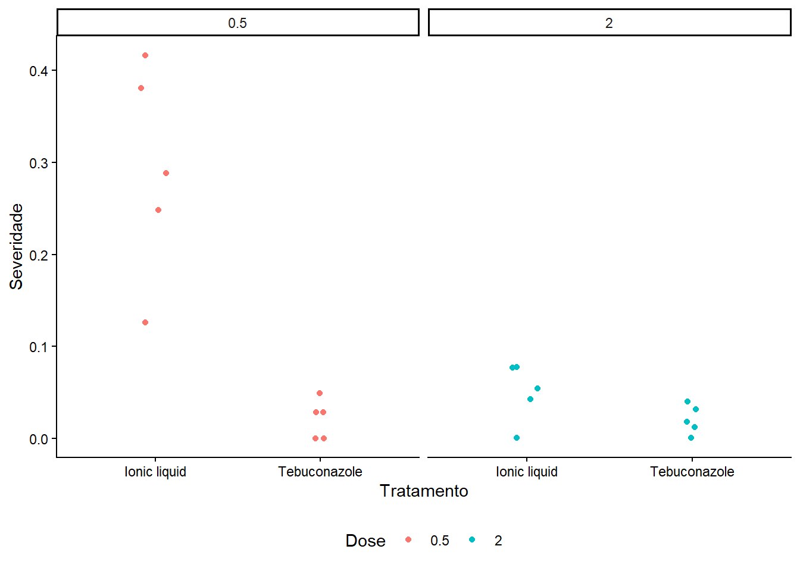
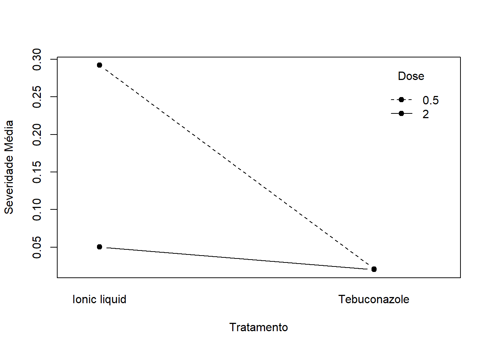
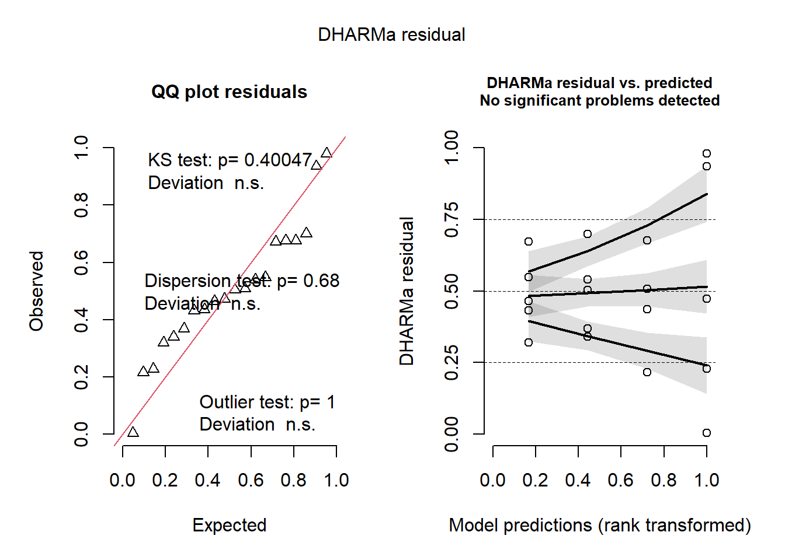
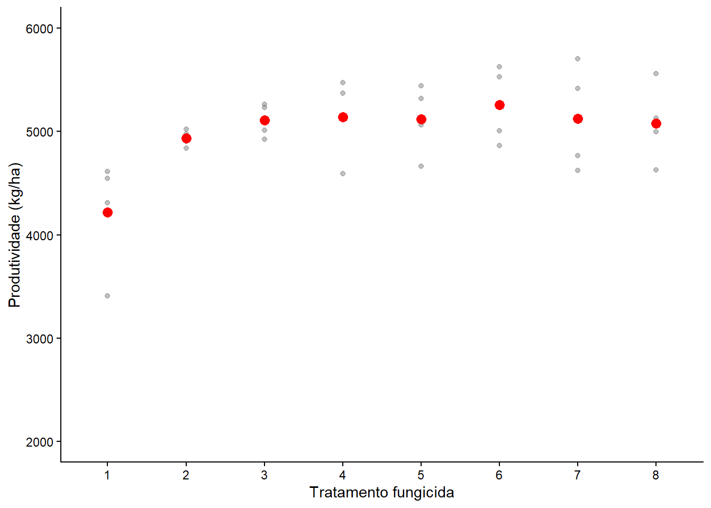
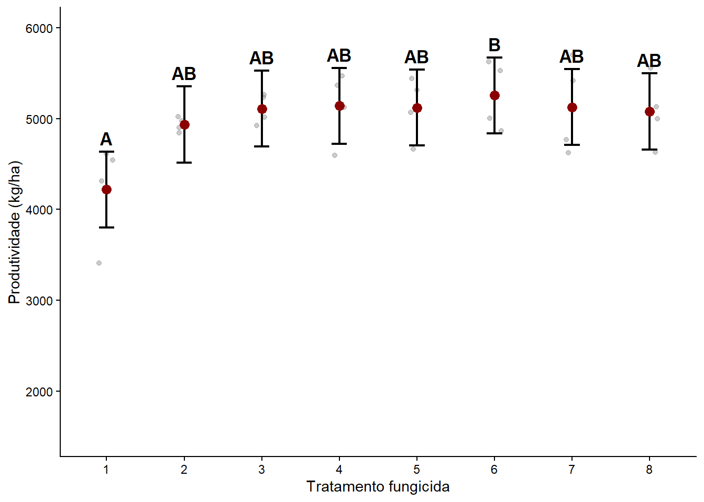
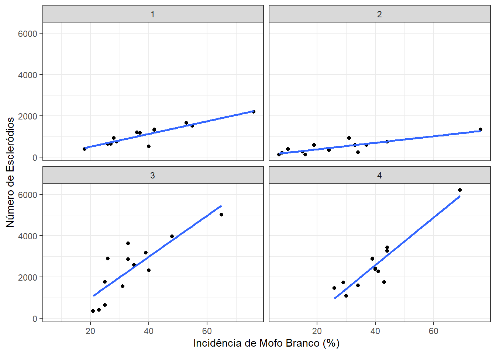
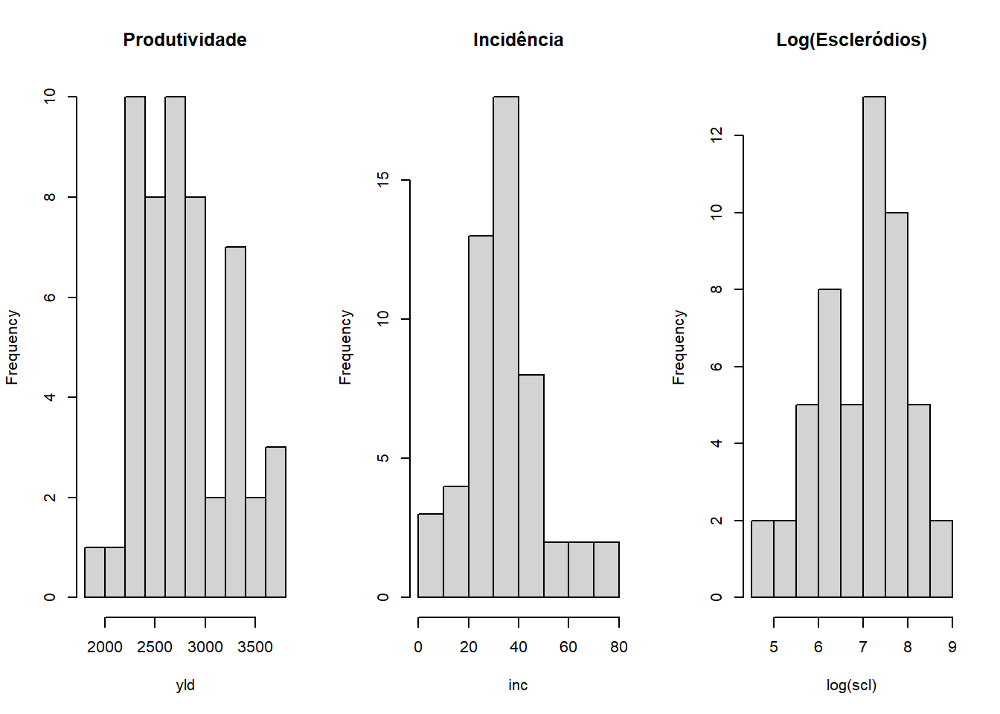
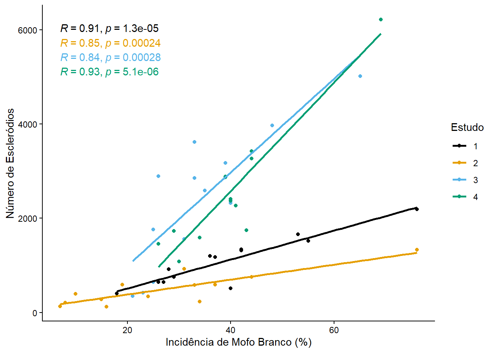

library(tidyverse)
library(readxl)
# Carrega os dados da aba "fungicida_vaso"
fungicidas <- read_excel("dados_diversos.xlsx", "fungicida_vaso")
# Preparação dos dados: calcula a incidência e converte 'dose' e 'treat' para fator
fungicidas2 <- fungicidas |>
mutate(incidencia = inf_seeds / n_seeds,
dose = factor(dose),
treat = factor(treat))Aula 6 - Análise de Variância (Fatorial e Blocos) e Correlação
Introdução
Nesta aula, abordaremos diferentes análises estatísticas comuns na fitopatologia: 1. Experimentos Fatoriais: Avaliação de dois ou mais fatores simultaneamente (ex: fungicida e dose) e a interação entre eles. 2. Delineamento em Blocos Casualizados (DBC): Controle de variação local no campo, isolando o efeito da heterogeneidade da área. 3. Análise de Correlação: Medida do grau de associação entre duas variáveis numéricas contínuas.
1. Experimento Fatorial (Fungicida x Dose em Vasos)
1.1 Carregamento e Preparação dos Dados
Neste primeiro conjunto de dados (fungicida_vaso), avaliaremos o efeito de tratamentos fungicidas (treat) e diferentes doses (dose) sobre a severidade de uma doença. Para análise fatorial, ambos os fatores devem ser analisados como variáveis categóricas (fatores).
1.2 Visualização Exploratória dos Dados
Antes de ajustar o modelo, é fundamental visualizar os dados para entender a distribuição da severidade e como os fatores interagem. O interaction.plot nos dá uma ideia visual se há interação (retas não paralelas indicam possível interação entre os fatores).
# Gráfico de dispersão por tratamento e dose
fungicidas2 |>
ggplot(aes(treat, severity, colour = dose)) +
geom_jitter(width = 0.1) +
facet_wrap(~dose) +
theme_classic() +
labs(x = "Tratamento", y = "Severidade", color = "Dose") +
theme(legend.position = "bottom")
# Gráfico de interação
interaction.plot(x.factor = fungicidas2$treat,
trace.factor = fungicidas2$dose,
response = fungicidas2$severity,
type = "b", pch = 19, fixed = TRUE,
xlab = "Tratamento", ylab = "Severidade Média",
trace.label = "Dose")
1.3 Modelagem Estatística: ANOVA Fatorial
A Análise de Variância (ANOVA) testa se as médias dos grupos diferem significativamente. Em um fatorial, testamos três hipóteses: o efeito principal do Fator A (tratamento), o efeito do Fator B (dose) e a Interação A x B.
m1em2: Modelos simples (apenas para fins didáticos).m3: Modelo completo com a interação (treat * dose).
# Modelos avaliando os fatores isoladamente
m1 <- lm(severity ~ treat, data = fungicidas2)
m2 <- lm(severity ~ dose, data = fungicidas2)
# Modelo Fatorial (Tratamento, Dose e Interação)
m3 <- lm(severity ~ treat * dose, data = fungicidas2)
anova(m3)Analysis of Variance Table
Response: severity
Df Sum Sq Mean Sq F value Pr(>F)
treat 1 0.113232 0.113232 30.358 4.754e-05 ***
dose 1 0.073683 0.073683 19.755 0.0004077 ***
treat:dose 1 0.072739 0.072739 19.502 0.0004326 ***
Residuals 16 0.059678 0.003730
---
Signif. codes: 0 '***' 0.001 '**' 0.01 '*' 0.05 '.' 0.1 ' ' 1Teoria Estatística - Interação: Se o p-valor da interação (
treat:dose) for significativo (geralmente p < 0.05), significa que o efeito do fungicida depende da dose aplicada. Sendo assim, o desdobramento (comparação de médias) deve ser feito avaliando um fator dentro dos níveis do outro.
1.4 Premissas da ANOVA
Para que a ANOVA seja válida, os resíduos do modelo precisam apresentar distribuição normal e homogeneidade de variâncias (homocedasticidade). Utilizamos o pacote DHARMa para essa verificação de forma visual e robusta.
library(DHARMa)
# Simula os resíduos do modelo 3 e gera os gráficos de diagnóstico
plot(simulateResiduals(m3))
1.5 Comparação de Médias
Como o modelo é fatorial, extraímos as médias marginais estimadas (emmeans). Havendo interação significativa, a rotina correta é comparar os tratamentos fixando os níveis da dose.
library(emmeans)
library(multcomp)
library(multcompView)
# Extrai as médias do tratamento DENTRO de cada nível de dose
medias_m3 <- emmeans(m3, ~ treat | dose)
medias_m3dose = 0.5:
treat emmean SE df lower.CL upper.CL
Ionic liquid 0.2921 0.0273 16 0.23420 0.3500
Tebuconazole 0.0210 0.0273 16 -0.03690 0.0789
dose = 2:
treat emmean SE df lower.CL upper.CL
Ionic liquid 0.0501 0.0273 16 -0.00781 0.1080
Tebuconazole 0.0202 0.0273 16 -0.03768 0.0781
Confidence level used: 0.95 # Teste de agrupamento (Compact Letter Display) para separar as médias
cld(medias_m3, Letters = letters)dose = 0.5:
treat emmean SE df lower.CL upper.CL .group
Tebuconazole 0.0210 0.0273 16 -0.03690 0.0789 a
Ionic liquid 0.2921 0.0273 16 0.23420 0.3500 b
dose = 2:
treat emmean SE df lower.CL upper.CL .group
Tebuconazole 0.0202 0.0273 16 -0.03768 0.0781 a
Ionic liquid 0.0501 0.0273 16 -0.00781 0.1080 a
Confidence level used: 0.95
significance level used: alpha = 0.05
NOTE: If two or more means share the same grouping symbol,
then we cannot show them to be different.
But we also did not show them to be the same. 2. Experimento de Campo: Delineamento em Blocos Casualizados (DBC)
No campo, muitas vezes não conseguimos garantir a homogeneidade total da área experimental (ex: declividade, umidade do solo variada). O bloco serve para isolar essa variação espacial.
2.1 Carregamento e Preparação
# Carrega dados do experimento de campo
campo <- read_excel("dados_diversos.xlsx", "fungicida_campo")
campo2 <- campo |>
mutate(trat = factor(TRAT),
bloco = factor(BLOCO)) |>
dplyr::select(trat, bloco, PROD) |>
rename(prod = PROD)2.2 Visualização dos Dados de Campo
campo2 |>
ggplot(aes(trat, prod)) +
geom_point(alpha = 0.5, color = "gray50") +
ylim(2000, 6000) +
stat_summary(fun = mean, geom = "point", color = "red", size = 3) +
theme_classic() +
labs(x = "Tratamento fungicida",
y = "Produtividade (kg/ha)")
2.3 Modelagem: ANOVA em DBC
A principal diferença do DBC em relação ao DIC (Inteiramente Casualizado) é a inclusão do bloco no modelo aditivo (+ bloco). O bloco absorve parte da variação residual (erro não controlado), melhorando a precisão estatística para testar o fator de interesse (tratamento).
# Modelo linear com Tratamento e Bloco
m_bloco <- lm(prod ~ trat + bloco, data = campo2)
# Checagem das premissas via DHARMa
plot(simulateResiduals(m_bloco))
# Tabela da ANOVA
anova(m_bloco)Analysis of Variance Table
Response: prod
Df Sum Sq Mean Sq F value Pr(>F)
trat 7 2994142 427735 2.6369 0.0402 *
bloco 3 105716 35239 0.2172 0.8833
Residuals 21 3406384 162209
---
Signif. codes: 0 '***' 0.001 '**' 0.01 '*' 0.05 '.' 0.1 ' ' 1Teoria Estatística - Bloco: Se o bloco for significativo na ANOVA, significa que foi eficiente em controlar uma fonte de variação. Não se realiza teste de médias para blocos, pois o interesse do estudo está focado apenas nos tratamentos.
2.4 Extração das Médias e Gráfico de Resultados
Após atestar significância na ANOVA para o fator Tratamento, realizamos a extração das estimativas do modelo e o teste de agrupamento.
# Calcula as médias estimadas do modelo para o fator tratamento
medias_m_bloco <- emmeans(m_bloco, ~ trat)
# Gera as letras indicadoras de diferença estatística
letras <- cld(medias_m_bloco, Letters = LETTERS)
letras$.group <- trimws(letras$.group) # Remove espaços extras das letras geradas
# Gráfico de Produtividade com as médias do modelo e separação por letras
ggplot() +
# Pontos reais brutos do dataset
geom_jitter(data = campo2,
aes(x = trat, y = prod),
width = 0.1, alpha = 0.4, color = "gray50") +
# Barras de erro do Intervalo de Confiança do modelo (emmeans)
geom_errorbar(data = letras,
aes(x = trat, ymin = lower.CL, ymax = upper.CL),
width = 0.2, linewidth = 0.8, color = "black") +
# Ponto representando a Média Estimada
geom_point(data = letras,
aes(x = trat, y = emmean),
size = 3, color = "darkred") +
# Letras de significância posicionadas um pouco acima do limite superior (upper.CL)
geom_text(data = letras,
aes(x = trat, y = upper.CL + 150, label = .group),
fontface = "bold", size = 4.5, color = "black") +
ylim(1500, 6000) +
theme_classic() +
labs(x = "Tratamento fungicida",
y = "Produtividade (kg/ha)")
3. Análise de Correlação Linear (Pearson)
A correlação de Pearson quantifica a direção e a força da associação linear entre duas variáveis quantitativas contínuas. O coeficiente (\(r\)) varia de -1 a +1: * \(r > 0\): Correlação positiva (as variáveis crescem juntas). * \(r < 0\): Correlação negativa (enquanto uma cresce, a outra decresce). * \(r = 0\): Ausência de associação linear.
3.1 Carregamento e Visualização Básica
Vamos analisar a correlação entre a incidência da doença (inc) e a produtividade (yld) ou número de escleródios (scl).
# Carrega dados do estudo de mofo branco
mofo <- read_excel("dados_diversos.xlsx", "mofo")
# Visualização exploratória da relação Incidência vs Escleródios
mofo |>
ggplot(aes(inc, scl)) +
geom_point() +
geom_smooth(method = "lm", se = FALSE) +
facet_wrap(~ study) +
theme_bw() +
labs(x = "Incidência de Mofo Branco (%)", y = "Número de Escleródios")`geom_smooth()` using formula = 'y ~ x'
3.2 Teste de Correlação
A função cor extrai o valor de \(r\). Para obtermos também o p-valor, usamos a função cor.test.
# Coeficiente de correlação geral (r) entre Incidência e Produtividade
cor(mofo$inc, mofo$yld)[1] -0.3825092# Teste de significância da correlação
cor.test(mofo$inc, mofo$yld)
Pearson's product-moment correlation
data: mofo$inc and mofo$yld
t = -2.9274, df = 50, p-value = 0.005133
alternative hypothesis: true correlation is not equal to 0
95 percent confidence interval:
-0.5934601 -0.1223842
sample estimates:
cor
-0.3825092 # Correlação entre Incidência e Produtividade agrupada por Estudo
correlacoes <- mofo |>
group_by(study) |>
summarise(r = cor(inc, yld))
correlacoes# A tibble: 4 × 2
study r
<dbl> <dbl>
1 1 -0.900
2 2 -0.815
3 3 -0.957
4 4 -0.747Interpretação: Um valor de \(r\) negativo e significativo entre incidência e produtividade indica de forma matemática que maiores taxas da doença afetam negativamente a produção. O p-valor testa a hipótese nula de que a correlação populacional é zero.
É recomendável avaliar as distribuições das variáveis via histograma, pois a correlação de Pearson é mais adequada a distribuições normais. Se a relação não for linear ou apresentar problemas severos de assimetria, a correlação baseada em postos (Spearman) pode ser a melhor alternativa.
# Histogramas para avaliação visual da distribuição das variáveis
par(mfrow = c(1,3))
hist(mofo$yld, main = "Produtividade", xlab = "yld")
hist(mofo$inc, main = "Incidência", xlab = "inc")
hist(log(mofo$scl), main = "Log(Escleródios)", xlab = "log(scl)")
par(mfrow = c(1,1))3.3 Gráfico de Correlação Avançado
Para melhorar a visualização científica e inserir diretamente os coeficientes e significância no gráfico, o pacote ggpubr possui a excelente função stat_cor().
library(ggthemes)
library(ggpubr) # Necessário para o stat_cor()
# Relação Incidência vs Escleródios colorida por estudo
mofo |>
ggplot(aes(inc, scl, color = factor(study))) +
geom_point() +
geom_smooth(method = "lm", se = FALSE) +
# stat_cor() adiciona o valor de R e o p-valor no gráfico de forma automática
stat_cor(show.legend = FALSE) +
scale_color_colorblind() +
theme_classic() +
labs(x = "Incidência de Mofo Branco (%)",
y = "Número de Escleródios",
color = "Estudo")